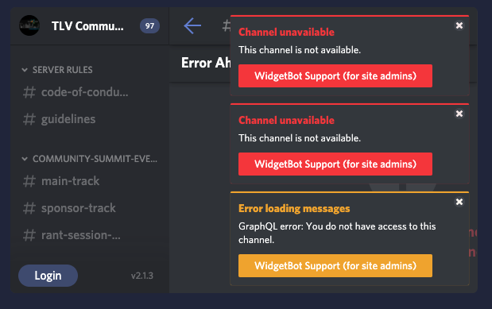
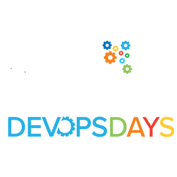
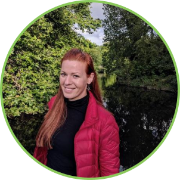
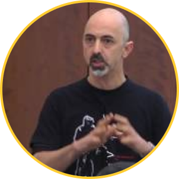
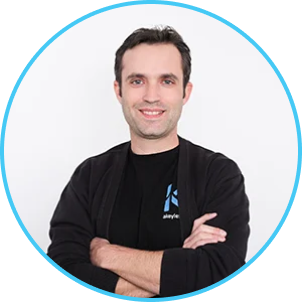
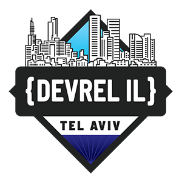

Community Summit TLV 2020
Watch All Event Videos
Find the full agenda here.
Sponsor Track Videos Only
Discord Server - LIVE CHAT
WHAT DO I DO NOW THAT I'M IN?
- You are welcome to ask questions about talks & interact with the speakers - you can drop your Q&A in the Main Track & Sponsor Track Channels
- You can interact with other community members based on topic - by conference there is a channel for each conference, you can introduce yourselves at the watercooler, and you are more than encouraged to visit the sponsor channels and watch their demos - not only are they offering awesome giveaways and prizes - they have some pretty awesome employment opportunities.
- During breaks we will have two excellent breakout sessions inside Discord - you are invited to join those, and please be sure to start dropping "rant topics" for Corey Quinn - early - so we can get as much funny time as possible. Based on some arbitrary criteria that we will figure out on the fly, we'll award a fun Hanukkah prize - so get suggesting!
TROUBLESHOOTING
If you are seeing a yellow or red error in the box, you need to click on the "Login" button at the bottom left - and authorize "Widgetbot" and then you will be able to use the chat from within the website.- If you are still seeing yourself as "UNVERIFIED" and are unable to access any channels that is because you have not accepted the Code of Conduct in the #code-of-conduct channel. Once you do so, you will receive your "Member" role, and will be able to participate in server chats.
2020 Event Speakers
Keynote & Spotlight Speakers
KEYNOTE
X
KEYNOTE: THE WORLD HAS CHANGED - HAVE OUR DESIGNS?
ABSTRACT
When we build systems our design and tradeoffs reflect the different scales of the system: the speed of disks, latency of network; They reflect the constraints and abilities of the underlying technologies. But as technology advances some of these assumptions have become invalid. We are no longer running on physical machines for which RDBMS systems were designed; SSD changed pretty much everything in the storage world, but our software was designed for magnetic disks; NVRAM? O/S design is way off. This talk will show how changes in hardware technologies impact design rational of various systems, highlighting the importance of understanding and rethinking the design rational and explore new designs that arise from the new rational.
Avishai's Bio
“In a world where anything has an API, everything is a software problem” this insight has guided Avishai Ish-Shalom throughout his diverse career working on improving the complex socio-technical systems that create and operate modern software and promoting the use of Mathematics in system design and operations. Spending 15 years in various software fields and capacities, Avishai has served as Engineer in Residence in Aleph VC, engineering manager at Wix.com, co-founded Fewbytes and consulted many other companies on software operations, reliability, design and culture. Currently Avishai is a Developer Advocate for ScyllaDB (The boring database ;-)
KEYNOTE
X
KEYNOTE: DATOPS - WHY IS IT SO HARD?
Einat's's Bio
Einat Orr is the CEO and Co-founder of Treeverse, the company behind lakeFS, an open source platform that delivers resilience and manageability to object-storage based data lakes. She received her PhD. in Mathematics from Tel Aviv University, in the field of optimization in graph theory. Einat previously led several engineering organizations, most recently as CTO at SimilarWeb.
KEYNOTE
X
KEYNOTE: DO YOU REALLY MEASURE WHAT YOUR USERS EXPERIENCE?
THIS TALK WILL BE GIVEN IN HEBREW
The system is slowing down, the customers are becoming frustrated, but our monitoring shows all green. Everyone handles performance issues, but how do we measure it properly? Are you really measuring what your users experience? Is it possible to measure everything? In my presentation, I will walk you through some of the blind spots we all have in our monitoring systems, and share from my own experience of dealing with performance issues.
Carmit's's Bio
Carmit Danon- DevOps engineer & monitoring lead @Terasky Cloud & DevOps. Carmit is a professional DevOps engineer, specializing in monitoring & automation platforms. Carmit has a significant experience and owns deep knowledge in application and infrastructure performance. Previously Carmit worked as a monitoring team leader in a financial enterprise and was responsible for sensitive system’s availability and reliability.
KEYNOTE
X
Good code, bad OPSEC - Data horror stories from a hacker's perspective
For the past few years, together with Ran Locar, we're running a side project to find sensitive data exposed by governments and large corporations. Although the code is usually OK from a security POV, in many cases the OPSEC is so bad it makes the effort invested in developing good code - redundant. In this talk we'll cover a few cases unearthed by our project, explore the failures, and discuss ways to prevent such catastrophes from happening on your systems.
Noam's's Bio
Noam Rotem is a CTO of a young VC backed start-up. in the past 25 years he built several large systems that are still being used by millions of people around the world. In his spare time, he hosts the popular podcast 'Cyber Cyber' covering various aspects of the cyber security scene, and is a renowned security researcher featured in some of the world's biggest media outlets.
RANT SESSION
X
SPOTLIGHT RANT SESSION: DO YOU KNOW WHAT YOUR PROBLEM IS...?
Expect the unexpected in this special live rant session that will be led by....YOU! Now is your chance to let Corey give a good talkin' to, to all of your "favorite" companies. Join our Discord and start suggesting companies for Corey to rant at in the "#rant-session-let-corey-have-it" channel.
Corey's's Bio
Corey is the Cloud Economist at The Duckbill Group. Corey specializes in helping companies address horrifying AWS bills; hosts the Screaming in the Cloud podcast; and curates Last Week in AWS, a weekly newsletter summarizing the latest in AWS news, blogs, and tools, sprinkled with snark.Mini-Track Speakers - DevOpsDays Tel Aviv
X
THE DEVIL'S DEVOPS
IGNITE
An Ignite that plays off Ambrose Bierce’s The Devil’s Dictionary to present satirical and painfully true definitions of words you hear at conferences all the time.
Satire is only funny if it’s true. Join me for an Ignite defining everyday devops words in the most pointed way possible.
Heidi's Bio
Heidi is a developer advocate with LaunchDarkly. She delights in working at the intersection of usability, risk reduction, and cutting-edge technology. One of her favorite hobbies is talking to developers about things they already knew but had never thought of that way before. She sews all her conference dresses so that she’s sure there is a pocket for the mic.X
THE STATE OF DEVOPS IN 2020
IGNITE
There are many opinions on DevOps, open source, and cloud-native tech, but what is actually being practiced? What can we learn from the collective experience of the community? We went and surveyed over 1000 engineers across the globe about their DevOps practices, challenges, and more, with special focus on cloud native and observability. This session will share data and insights from the survey, with key trends (compared to previous years’ DevOps Pulse surveys), points of interest, and challenges that developers experience on a daily basis. This session will help you learn from the collective experience and emerging best practices in the community, to help guide decisions on processes, tooling and architecture choices.
Dotan's Bio
I’ve been a dev, I’ve been an architect, I’ve been a product, and I’ve lived to tell the tale. I love working with others to leverage experience and best practices to avoid common mistakes, and I’m captivated by novel ideas and technologies that try to make sense of the ever-increasing complexity of our world.X
Waste-Oriented, Hunch-Based Web Architecture
IGNITE
Promoting a whole new architecture and philosophy requires the right tooling, and this is exactly what I want to talk about. Okify is a CLI that helps software engineers prioritise feelings over production by ignoring errors. Singload is a load-balancer that helps software engineers reduce system complexity at all costs by routing traffic to just 1 node. In my talk I will dive into using those tools, and how they promote waste-oriented, hunch-based web architectures.
Michael's Bio
I’m currently making stuff ☕ –> 🧑💻 –> 🤦♂️ Linkedin ProfileX
Robert joined IBM in 2007 and has held various positions in IBM, all in the field of Service Management. In total, he has over twenty years of experience in enterprise systems in multiple domains spanning development, technical leadership, project management and offering management.
Robert speaks at global conferences for IBM and creates assets that range from internal documentation to published books.
Obviously a major malfunction... Lessons 35 years after the Challenger Disaster
IGNITE
The Challenger launched for the last time on January 28th, 1986. It never reached orbit. The Challenger disaster was not only a failure of the technology, but a failure of the engineering and management culture in NASA. While engineers were aware of problems in the technology stack, there was no conception of the risks they actually posed to the spacecraft. Management had shifted the focus from “prove that it’s safe to launch” to “prove that it’s unsafe to stop the launch”. This session will present the risk analysis (or lack thereof) of the Shuttle program and draw parallels to modern software development. In the end, launching a shuttle is an extremely complex deployment to the cloud… and above it.
Robert's Bio
Robert is a Senior Managing Consultant and member of the IBM Garage Solution Engineering group. Within the worldwide Garage Solution Engineering group, he is part of the Cloud Service Management and Operations (CSMO) team, working in all fields of CSMO and specializing in Site Reliability Engineering (SRE) and Chat Operations (ChatOps).Robert joined IBM in 2007 and has held various positions in IBM, all in the field of Service Management. In total, he has over twenty years of experience in enterprise systems in multiple domains spanning development, technical leadership, project management and offering management.
Robert speaks at global conferences for IBM and creates assets that range from internal documentation to published books.

X
Pregnancy - Nature's CI/CD
IGNITE
So you and your partner decide to have a child. From this point onwards, you can treat it as a CICD project since it’s basically the same. This is going to be a satirical talk ridiculing my current state of pregnancy as an SRE (month No. 9 at the time of the conf).
Julias's Bio
Julia Shub, DevOps Lead @ Lawgeex Redhead extraordinaire, queen of sunscreen and wearer of hatsX
Resilience Engineering - a Primer
IGNITE
Lately we’ve heard some buzz around the term “resilience engineering” in relation to information systems. Much of it initiated by none other but John Allspaw - the man who inspired the birth of DevOps. My talk will lay out how the ideas of resilience engineering relate to our daily work.
Anton's Bio
Anton (Ant) Weiss is the founder, principal consultant and CEO at Otomato – the effective software delivery company. Anton has been building and delivering software for the last fifteen years both at large enterprise companies (AT&T, BMC) and startups. A big fan of technical training and knowledge sharing, Anton was one of the initiators and instructors of the first DevOps certification course in Israel. Anton is a seasoned engineer, but he also holds a BA in Sociology and an MBA, which makes him very keen on exploring the social aspects of collaborative software development. He is a frequent speaker at technology events and a rock star – Ant loves the stage and makes sure his audience stays both entertained and enriched. Firm believer in continuous improvement and organisational transparency.Mini-Track Speakers - Cloud Native & OSS IL
X
Submariner: multi-cluster networking for Kubernetes
IGNITE
With standard Kubernetes networking, connectivity is limited to a single cluster only, requiring proxies to connect workloads across clusters for migration, disaster-recovery, or geographic locality. Submariner is an open source project that enables high-performance cross-cluster connectivity and Service Discovery between different Kubernetes clusters, either on-premises or in the cloud. With Submariner, your applications and services can span multiple cloud providers, datacenters, and regions.
Nir's Bio
Nir Yechiel is currently an Engineering Manager at Red Hat, working on hybrid cloud networking. Nir is a long time contributor and advocate of open source networking projects, ranging from Linux, to Open vSwitch, OpenStack, OpenDaylight and Kubernetes. Nir was previously a Product Manager on the Connectivity team at Facebook, and prior to that on the Cloud Platforms Business Unit at Red Hat.X
k3s: From Development to Production at the speed of light
IGNITE
With Kubernetes becoming the standard container orchestration tool, we got to a point in which apps are deployed and managed in the same ecosystem for different purposes. As a result, the number of Kubernetes distributions started to rise in order to deal with different scenarios. To name a few: OpenShift, RKE, Tanzu… K3s is one of the newest distributions made by Rancher, which is an open source project that recently joined the list of CNCF Sandbox projects. The main goal of K3s is providing a lightweight k8s distribution using a single binary, while reducing the memory consumed by the orchestration tool.In this lightning talk we will discuss what k3s is, compare it to k8s and see how it can be installed for different purposes: CI, Edge, development and production.
Ronens's Bio
Ronen Levinson is a DevOps Engineer at Sisense. Ronen is passionate about new technologies, open source projects and cloud-native tools. He is an organizer of GitHub User Group, a meetup group which discuss GitHub new features and Git practices.X
Prior to joining AWS, Boaz worked with a variety of key Israeli startups—managing development and operations teams as well as leading cloud adoption and partnerships with major cloud vendors.
Being good neighbors - Rate limiting in a serverless world
IGNITE
How do you avoid DDoSing other systems or running out of resources when developing serverless applications? Serverless cloud based applications bring new challenges with their architecture and scaling capabilities. In a perfect world, this should be an advantage only, but we all know by now, that the world ain’t perfect. Integrating serverless with non-serveless systems is a challenge you should take into account and plan accordingly. This session will focus on why rate limiting is so important in serverless systems and how you should design a better system that acts as a better neighbors.
Boaz's Bio
Boaz Ziniman is a Principal Developer Advocate at Amazon Web Services. He raises customer awareness of AWS services and, in particular, helps customers understand the benefits that the AWS Cloud can deliver. Boaz has many years of experience with web development and operations, architecture, IT management, and cloud.Prior to joining AWS, Boaz worked with a variety of key Israeli startups—managing development and operations teams as well as leading cloud adoption and partnerships with major cloud vendors.
X
Rant: Everybody talks about data but nobody talks about storage
IGNITE
We live in a data driven world, and the data needs to be stored somewhere on some storage. This makes the storage a critical resource that may break your application and even lose all your data! Ignoring it just won’t work. You have to choose the right kind of storage for your workload: block, file or object. You need to use it wisely or you will lose performance and scale. You need to consider cost efficiency or pay a large bill in the end of the month You must make sure your data is secure by using best practices, access control and encryption. Don’t forget about Data protection as losing your data is a huge disaster!
Orit's Bio
Orit is an experienced software engineer who is passionate about open source and infrastructure with extensive experience with distributed systems and storage. She is OpenShift Container Storage Architect at Red Hat focusing on storage for Containers, hybrid cloud, multi cloud and edge. She was a principal architect at Lightbits labs, a software-defined storage startup developing NVMe/TCP. At Red Hat, she worked on Ceph object storage (Ceph Rados Gateway), a highly available distributed software-defined storage designed to scale and handle PetaBytes scale. In her past role at Red Hat she Co-maintained and developed live migration for KVM/QEMU. Previously at IBM Research Labs, she developed nested virtualization for KVM.X
Crash Course: Open Source Licenses
SPOTLIGHT IGNITE
Open Source is an integral part of virtually all modern software development. However, it is often too easy to not realize that some Open Source packages may come with strings attached to them - in the form of their license. In fact, some packages that might seem to be Open Source, may technically not be ones at all.
In the talk, some of the most commonly found licenses and their implications on end users will be discussed: - GPL-style licenses, including Affero GPL - BSD-style licenses - Source-available licenses.
If you’ve never heard about these licenses, or if you did hear about them but never really bothered to understand how they may affect you - attending this talk may be a good idea.
In the talk, some of the most commonly found licenses and their implications on end users will be discussed: - GPL-style licenses, including Affero GPL - BSD-style licenses - Source-available licenses.
If you’ve never heard about these licenses, or if you did hear about them but never really bothered to understand how they may affect you - attending this talk may be a good idea.
Zeev's Bio
Zeev Suraski is one of the creators of the PHP programming language, which powers much of the Internet to this date. Zeev was co-founder & CTO of Zend Technologies, that was acquired by Rogue Wave Software. Today, he’s the CTO for Strattic - a next-gen static & serverless hosting service for WordPress web sites. Zeev is a photography enthusiast, spicy food addict and a gadget geek.Mini-Track Speakers - Statscraft
X
SLOs: You're missing the point
IGNITE
Innovation is how you win customers; reliability is how you keep them. To succeed, you need both. But as organizations adopt Service Level Objectives (SLOs) as part of their Site Reliability Engineering (SRE) practices, they become fixated on reliability and innovation suffers. In this talk, I’ll discuss why you need to spend more time on innovation and how to do it. I’ll also share how you can escape your everyday toil and stressful firefighting to rediscover the fun in engineering—and help your company succeed at the same time!
Jason's Bio
Jason Yee is Director of Advocacy at Gremlin where he helps people build more resilient systems by learning from how they fail. He also leads the internal Chaos Engineering practices to make Gremlin more reliable. Previously, he worked at Datadog, O’Reilly Media, and MongoDB. His pandemic-coping activities include drinking whiskey, cooking everything in a waffle iron, and making chocolate.X
5 Monitoring Anti-Patterns (and how to avoid them)
IGNITE
During the past 15 years I was lucky to partake in building and monitoring various production systems. However, while sometimes the monitors and alerts we created were spot-on, and helped us mitigate future failures quickly, other times the dashboards we created were simply useless, and the alerts did nothing but make us miserable. In this talk we will review several common monitoring mistakes my peers and I repeatedly tend to lean towards. We will discuss why these are not the right things to do, and suggest several, hopefully better alternatives.
Heidi's Bio
Nati Cohen is a Production Engineer at Here Technologies and a Teaching Assistant at the Interdisciplinary Center Herzliya. Previous experience includes: operations consulting, software development, *nix administration and security research in the Intelligence Corps as well as in multiple startup companies.X
Optimizing monitoring for first impressions
IGNITE
On average, any Instagram story gets 2 sec of attention from a person viewing it. Yes, that’s the speed with which we’re already consuming information. But, how much information can you get from a 2sec look at your monitoring? And if you just joined a company and it’s your first production incident today? I’m sure, using the right tools and thinking of monitoring as a product, it’s possible to build intuitive and user-friendly monitoring, which will dramatically reduce the amount of debugging and troubleshooting in your life. My talk is about how to do it, why it’s important to pay attention to it and how to measure results.
Anna's Bio
My name is Anna, I’m working in the IT field for almost a decade in various Software Development roles. I’ve started from QA, worked as a FED, Fullstack Dev, SRE and most recently as an Infrastructure Engineer. And every role I’ve had so far included working on production incidents. I’ve worked for companies aimed at local, nationwide and global markets. Fintech, and web applications. B2B and B2C. What I’ve seen is the same problems while working with production incidents everywhere. That’s the reason why I decided to share my experience and my passion for troubleshooting and debugging — I believe it can help more engineers, teams, and companies too.X
When she’s not working on robust systems with Aerospike, she is organizing the GopherCon Europe and Cloud Nein conferences, and the Berlin chapters of the Go and Women Techmakers user groups.
Prior to that, she was an Engineering Manager, Software and Hardware Engineer, and a Co-Founder of a mobile start-up.
In her free time, she is wondering if there is life on Mars.
Highway to High Availability
IGNITE
High availability is the holy grail of an architect, ensuring the system’s uptime is achieved for a higher than normal period. This can be achieved with an Active-Active architecture and Active-Passive architecture, which, in turn, can be deployed using different models, eg multi-site clustering and cross datacenter replication. The performance is monitored to ensure the system is meeting the agreed upon SLAs and SLOs.
Let’s understand all those terms, the relationships between them and how to implement those.
Let’s understand all those terms, the relationships between them and how to implement those.
Natalies's Bio
Natalie is a learner, a Google Developer Expert for Go, a public speaker and a sailor.When she’s not working on robust systems with Aerospike, she is organizing the GopherCon Europe and Cloud Nein conferences, and the Berlin chapters of the Go and Women Techmakers user groups.
Prior to that, she was an Engineering Manager, Software and Hardware Engineer, and a Co-Founder of a mobile start-up.
In her free time, she is wondering if there is life on Mars.

X
The dark side of Flamegraphs. What we can and cannot see
IGNITE
Flamegraph is a visualization of hierarchical data used to show sampling profiling results. We found them to be extremely useful observability tools. At eBay, we use Flamegraphs to triage performance problems and visualize service behaviour in production. In this talk we’ll go over Flamegraphs, their strengths and limitations. We’ll also explore ideas to extend the technology especially in performance regression analysis where the current solution struggles and a view of more than a single Flamegraph is required to compare different runs.
Amir's Bio
Amir Langer has developed software for more than two decades now with a passion for high performance and high quality of code. He spent most of his career in the UK including 7 years at LMAX Ltd, the breeding ground for what became “mechanical sympathy” and “continuous delivery”. He is now a software architect at eBay.Mini-Track Speakers - DevSecCon Tel Aviv
X
Sour Mint - The case of malicious advertisement SDK, affecting thousands of mobile apps
SPOTLIGHT IGNITE
In this talk we will share the details surrounding an SDK distributed by a Chinese ad network. We will share the details of the research methods used to identify the excessive data tracking and remote code execution backdoor in the code, and why it went undetected for more than a year. This talk will share all the details of our research into a popular advertisement SDK affecting billions of consumers of both Android and iOS ecosystems. We will share the details of our research process, leading to the discovery of hidden functionalities in the SDK, including a remote code execution backdoor affecting the privacy and security of billions mobile devices.
Danny's Bio
Danny Grander is a veteran security researcher and the cofounder of snyk.io, where he works on open source security and leads Snyk’s security research. Previously, Danny was the CTO of Gita and a lead researcher and developer for a few startups. Danny’s CTF team, Pasten, won both the Chaos Computer Club and Google’s latest CTFs. Talks from last year: O’Reilly Security NodeConfX
During my free time i play basketball, run and then eat all the calories i burnt off at a nice restaurant :)
Security Chaos with Load Balancers
IGNITE
Whilst testing a directory traversal vulnerability within one of our services, I found that I got different behaviour when testing through a load balancer and direct to the service. This talk is about the research the that followed. Key Findings Discussed: AWS Application Load Balancers share code with NGINX, NGINX parses http urls in a special way which results in a protective behaviour for directory traversal attacks, How I bypassed this protection behaviour, and Quick lessons from the research
Danny's Bio
Danny is a security professional who has experience in penetration testing, appsec, devsecops and cloud security. Having worked both as a consultant and now as an in-house lead security engineer, Danny has experience in many different industries from finance to pharma. His recent passion is architecting secure, scalable solutions in the world of appsec, devsecops and cloud and he leads all his projects with the same goal -> ‘the secure method should be the easiest choice for the developer’.During my free time i play basketball, run and then eat all the calories i burnt off at a nice restaurant :)
X
When DevOps Fails, Miserably
IGNITE
In this presentation I will briefly present some insights on the soft belly of DevOps. Even when SecDevOps is used, there are additional factors that should be understood for having a DevOps system or a DevOps operation secure. Some of the insights that I gain in the past years and most recently as the security manager of a major media company:
- SecDevOps requires more people – security architects and security experts.
- Juniors will not cut it.
- Operational security experts will not do.
- Refer to OWASP IL by me: Should I Trust my Vendor
- Knowledge Gap – a very nefarious serial killer of DevOps, destroyer of security operations
- Ludicrous security tools – some tools are no good. In some ecosystems the best of breed tools is useless.
- Testbenching the 2 best of breed tools, mano-a-mano.
- Orientation on content and delivery
Yaniv's Bio
A Security Consultant since 2004. Worked for Comsec, 2BSecure, Palantir Security and as a Freelancer. Worked my way to be the CTO of Palantir Security, in 2014. In 2017 relocated to TheNetherlands, as a Security Consultant, and is now the Security Manager of RTL Netherlands. Have a deep passion for Information Security, and in-depth analysis of highly complex systems.X
HACKER RIGHTS
IGNITE
Sixty percent of hackers don’t submit vulnerabilities due to the fear of out-of-date legislation, press coverage, and companies misdirected policies. This fear is based on socially constructed beliefs. This talk dives into the brain’s response to fear while focusing on increasing public awareness in order to bring legislation that supports ethical hackers, ending black hoodie and ski mask imagery, and encourage organizations to support bilateral trust within their policies.
Yaniv's Bio
Chloé Messdaghi is the VP of Strategy at Point3 Security. She is an InfoSec Advocate & Activist who strongly believes that information security is a humanitarian issue. Besides her passion to keep people safe and empowered online & offline, she is driven to fight for hacker rights as a Cofounder of Hacking is NOT a Crime. She is also the founder of WeAreHackerz (formerly known as WomenHackerz) & the President and cofounder of Women of Security (WoSEC), podcaster for ITSP Magazine's The Uncommon Journey, and runs the Hacker Book Club.

X
Stopping the hassle of SSH keys by using SSH Certificates
IGNITE
SSH Keys are known to be a major operational burden, either because of the constant provisioning to target hosts or due to SSH keys that went lost (not to mention employees that took their private keys with them after they left the company…) In this session you’ll learn how to eliminate the need for ssh-keys by using ssh-certificates which in order to profoundly improve efficiency and significantly increase your workloads security posture with just-in-time access and audit.
Oded's Bio
Oded Hareven, a veteran of the Israeli Defense Forces Cyber-Security elite unit, has held various senior product and project management positions in the enterprise security and Identity and Access Management realm. Currently is the CEO and co-founder of Akeyless.io, a breakthrough SaaS Secrets Management platform made for an infinite scale.

Mini-Track Speakers - DevRel IL
X
Take Aways from 400 Virtual Talks since March
IGNITE
Virtual talks are the new norm. In theory, they are great — speakers and attendees can join from around the world, infrastructure is cheap and scalable, recordings are simple. But what is happening in reality with problems like Zoom fatigue? What is and what isn’t working? At Elastic, we have done 400 virtual talks and meetups since March. This talk gives an overview of the development over time, specifics in regions, differences in tooling,… and adds some personal anecdotes.
X
Virtually Unforeseeable: Pandemic DevRel
IGNITE
One of the hardest parts professionally during this pandemic is how to shift a role that was mostly face-to-face and high travel to being 100% virtual - without losing the connection that in person interaction provides. This has led to a lot of growing pains over the past 8 months (!!!), but as a company cornerstoned in process we adapted our workflow to accommodate our New Abnormal. This is a 5 minute talk where I will run through how we shifted our workflow, not just by top loading already virtual content like blog posts but also focusing on other ways that the advocacy team could assist the business as a whole including shifting how to handle virtual events, booth duty, changes in how to present at virtual events, and more.
X
Monitoring People - An Engineering approach to understanding human KPIs
IGNITE
This talk will cover the similarities between observability of complex systems to humans, understanding and setting KPIs, alerts and why the CPU (working hours) is not necessarily the metric that measures how well an employee gives value. We’ll go through how engineering processes such as continuous integration, allowing us to catch problems earlier in smaller deltas, are not at all far from having a continuous improvement and feedback system. We’ll understand how a failed test in a build is a good thing, just as a human mistake or misbehaviour is in fact an opportunity to learn and improve.
X
3 Data Driven Burnout Indicators
IGNITE
Burnout is dangerous. Even more so when we can’t see the physical indicators due to being a distributed team. In this lighting talk I discuss the 3 data-driven burnout indicators I use to make sure my team rested and happy. As a manager it’s your responsibility to identify employee burnout and make sure your dev team is rested and healthy. But identifying signs of burnout as a distributed team can be challenging. In this lightning talk I discuss the 3 data-driven burnout indicators I use to make sure my team rested and happy.
X
BREAKOUT SESSION #1 - How to Write Your Professional Bio
Sometimes during our careers, we are asked to write something about ourselves. It can be an awkward task and most of the time we have no idea what to include, how to sell ourselves, how to make it relevant etc. In this hands-on session, you will learn how to create and improve your professional bio.
BREAKOUT SESSION #2 - Useful Tips on Improving Your Tech Talk Proposal (CFP)
In this hands-on session, I will share some useful tips on how to improve your talk proposal and increase the chances of getting your talk selected, as learned from my experience as a producer of various tech conferences in the past 5 years, such as AngularUP, React Next, Node.TLV and React Week NYC.